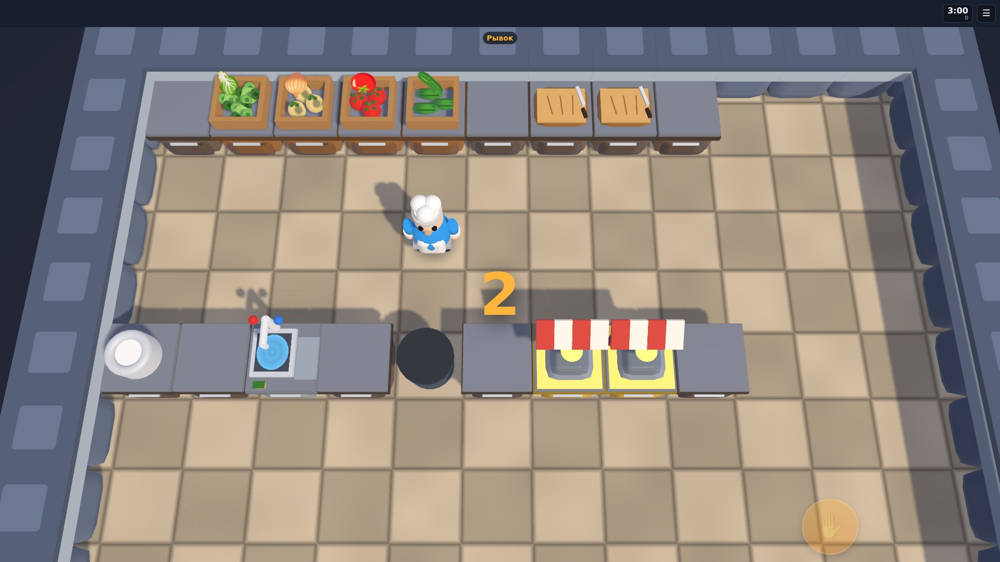
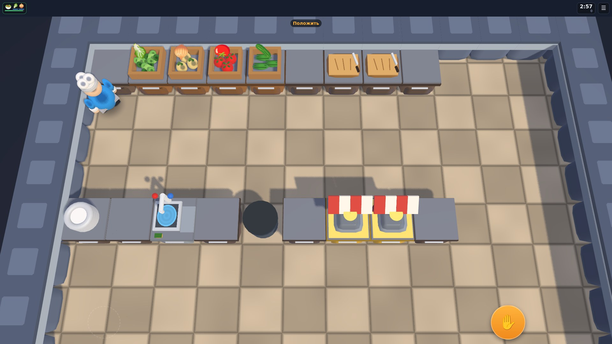
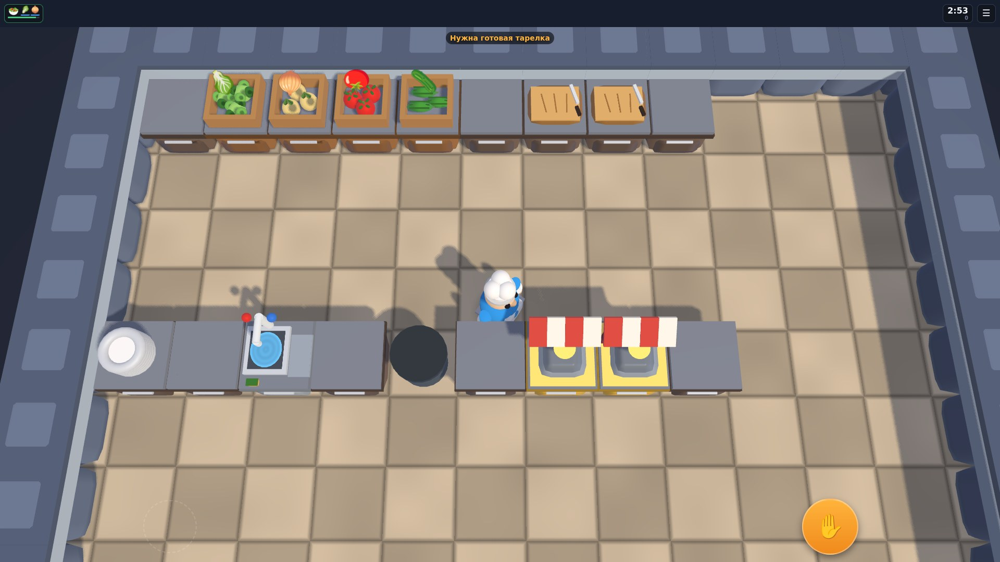

Screenshots


About game
A co-op cooking game in the spirit of Overcooked. Orders arrive one after another and the timer does not wait: someone chops, someone stands at the stove, someone carries plates to the hatch — and you get in each other's way, because the kitchen is small.
What's inside: • kitchens that unlock one after another: a training one with salads and no fire, a cellar, a terrace, a canteen, a veranda, a loft, an attic; • stars for speed: the faster you fill an order, the more of them you keep at the end of the shift; • burning pans, dirty plates and a sink to watch yourself; • two-player co-op directly between devices: a link, a QR code or a pasted string — no game server; • a solo shift if there is nobody to play with.
How to play
The stick moves the cook, the button on the right does whatever fits where you stand: at a crate it takes an ingredient, at a board it chops, at the stove it puts a pan on, at the hatch it serves.
Orders sit at the top of the screen. Build the dish from the recipe: chop it, fry it if needed, put it on a plate and carry it to the hatch. Empty plates come back dirty and are washed in the sink.
A pan left on the fire starts smoking and then burns — take it off in time. The shift ends on the timer and stars are counted from the orders you served.
For two: one taps Play together and sends a code, the other pastes it — after that the phones talk directly.
More games by this developer
 71
71
 64
64
 58
58
 66
66
 61
61
 69
69
 67
67
 65
65